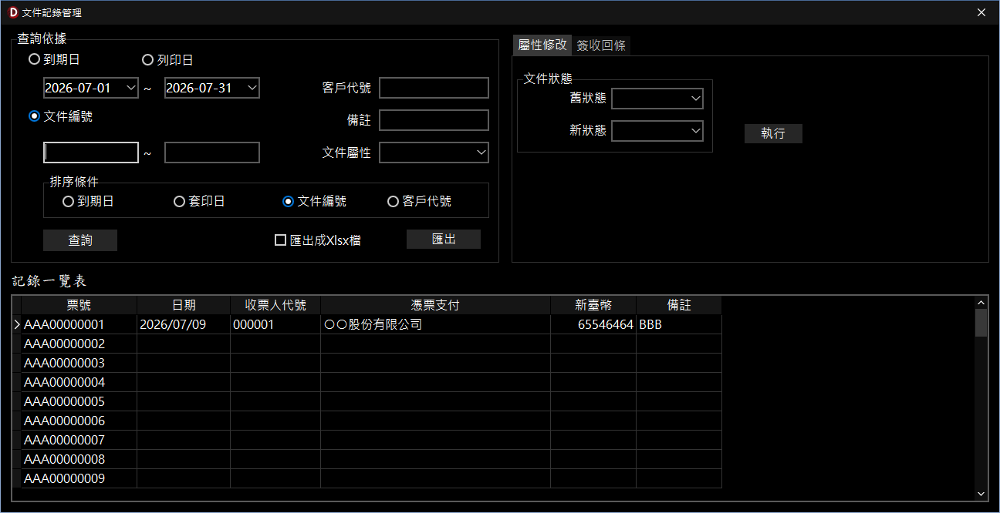

文件紀錄管理
有價值的文件紀錄，可經過設計指定保存方式，讓紀錄可以產生價值或做為決策的依據。
前置作業
-
啟用紀錄功能
- 說明：啟動文件紀錄進行計劃性的儲存。
-
位置：文件 ＞
文件資訊管理 ＞
進階設定 ＞ 功能設定，選取「文件領用登錄」。
-
登錄文件編號
- 說明：登錄文件編號，讓紀錄依編號進行存檔。
-
位置：紀錄 ＞
文件領用登錄。
-
指定儲存的紀錄欄位
- 說明：將紀錄存入指定的位置。
-
位置：文件 ＞ 輸入管理設計 ＞
紀錄儲存設計。
操作說明
-
類型支援/紀錄主體：只要有文件編號（如支票、發票）或自訂文件編號均可。
- 金融類文件：如支票類，配合「銀行帳號」做為紀錄主體。
-
非金融類文件：如發票或自訂文件編號，配合「使用者代號」做為紀錄主體。
-
查詢／報表：
-
查詢依據：
-
到期日：指文件（支票、發票）上面的日期；若為本票因有 2
個日期，則指承兌日。
- 列印日：為輸入紀錄（列印）時的日期。
- 文件編號：依文件編號範圍進行查詢。
-
報表輸出：提供 HTML（網頁）及 xlsx 等 2
種格式，依照排序條件的不同，提供 2
種內容（日計表、一般報表）的報表。
-
排序條件：
- 日計表：排序條件設為「到期日」時，報表提供日計功能。
-
一般報表：排序條件設為列印日、文件編號客戶代號時，沒有日計功能。
-
屬性修改：共 5 種屬性
-
未使用
(DocUnused)：依登錄順序，編號由小到大呈現於使用文件編號的位置。
-
已簽發
(DocIssued)：票號已被使用且存有紀錄，為列印「領款簽收單」的依據。
-
作廢
(DocVoided)：該票號不再使用（例如支票開錯作廢，或發票換月將未使用的票號作廢）。
-
已承兌 (DocAccepted)：如支票已承兌，屬性由「已簽發
(DocIssued)」變更為「已承兌」，此時支票不會再出現於「領款簽收單」中。
- 遺失 (DocLost)：將文件註記為遺失。
-
領款簽收單：
- 請先下載領款簽收單的文件設定檔，檔名為 TW-ADM_ACC_0000_1。
-
設定好文件編號的範圍，即可依編號查詢（列印）屬性為「已簽發
(DocIssued)」的紀錄。

文件紀錄管理視窗